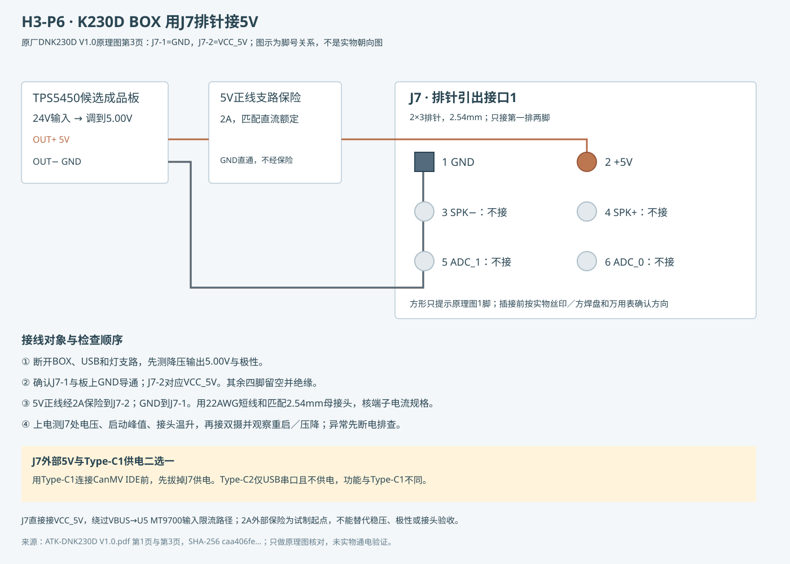

核对原厂DNK230D V1.0原理图后，P6采用J7-2接外部5.00V、J7-1接GND。这样可省掉Type-C供电线；原理图上这两脚直接接板内VCC_5V／GND。J7是2×3、2.54mm排针，既不是PH2.0插座，也不是只有GPIO的J10。

USB1的VBUS先经过U5 MT9700再到VCC_5V；J7外供直接进入VCC_5V，因此不能继续把USB输入限流当作外供保护。P6将5V输出另加2A直流保险作为试制起点，降压板仍留至少3A能力余量；这不是给排针或板内走线认证2A／3A。实际启动峰值、接口接触电阻、温升和压降须测量，保险误断时先查原因，不能直接换更大值。
J7-1是GND，J7-2才是+5V，不能按“1脚通常是电源”猜。先认实物丝印／方焊盘并断电测导通。图中排列只表示原理图脚号；未核对实物插接方向。
5V部分用22AWG约0.34mm²短线，目标≤200mm；接头选匹配J7的2.54mm 2×3母接头，只装1、2两线，其余四孔空位绝缘，要求供应商确认端子适用线径和额定电流。不要拿XH2.5或PH2.0替代，也不要用两根松散单芯杜邦跳线承载整机供电。24V干线仍用0.75mm²压接线。2A保险和座应有相应直流额定，不只看交流电压标识。
要用Type-C1连接CanMV IDE，先断开J7外供，再让USB1供电。Type-C2是USB双串口接口，原厂明确不具备供电功能，可在外供时作对应串口调试，但它不能代替Type-C1的USB设备／IDE通道。
正点原子BOX接口说明列出5V／GND排针、Type-C1供电与Type-C2不供电。具体J7脚号及VCC_5V连接来自本地原厂原理图第3页，第1页为U5供电路径；原件SHA-256：caa406fe42535de36d8d51b1cd3158c917569eb2748673e40780465272636a27。仅原理图核查，未实物上电验收。